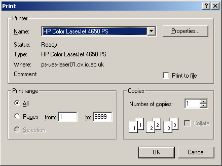

Open topic with navigation
Pressing the Print... button on the Print Preview dialog activates the Print dialog, shown below.

Print Dialog
This is a standard print dialog that can be found in most Windows applications, so needs no explanation here.
Commercial in confidence
© 2017 Process Systems Enterprise Limited